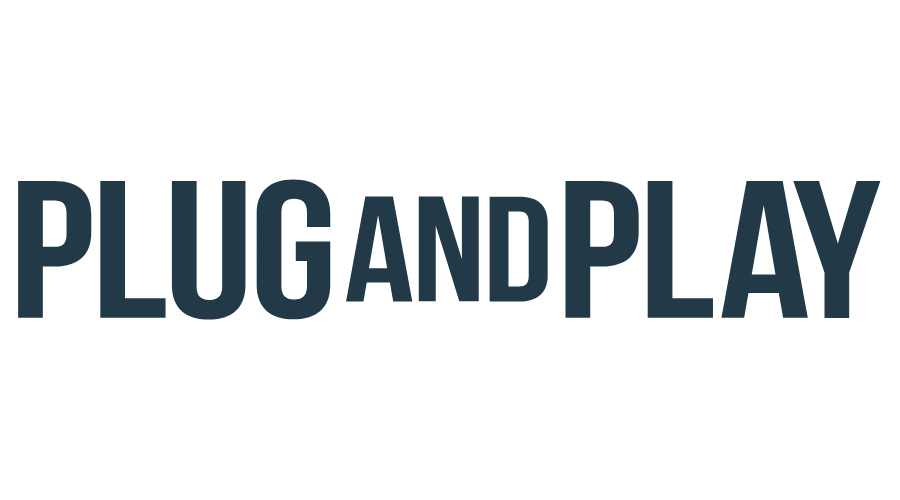

113 startups in the first Silicon Valley batch of 2026. A $50M Fintech & AI Fund closed in June. An AI center of excellence in Valencia. Every vertical is getting the same corporate-partner question: where does AI actually fit in your stack. A shared methodology for answering it.
The first Silicon Valley batch of 2026 brought in 113 startups. The Fintech & AI Fund closed at $50M in June with nine institutional LPs. Valencia stood up an AI center of excellence in April. The MANA Common office in Miami is entering its sixth year. Across every vertical, portfolio founders are getting the same corporate-partner question: where does AI actually fit in your stack.
Program directors are answering it case-by-case. The quality of that answer varies by vertical, by director, by the founder's ability to articulate the workflow. This page is about what a shared methodology for that answer would look like, and which cohort would be the cleanest first test.
The job of the methodology is to help founders figure out which layer each problem belongs on: AI, traditional code, rule-based logic, human judgment, or "do not build it at all." A working estimate across the engagements we run:
Code and database work. Deterministic, testable, already well understood by most engineering teams.
Explicit logic. Policy, routing, validation, scoring. Cheaper to maintain, easier to audit than an LLM call.
Problems where probabilistic reasoning, language, or pattern extraction earns its cost. The layer worth protecting.
Applied to a PNP cohort: the question is not how should these 113 founders use AI. The question is which of their core workflows actually belong on an AI layer versus a deterministic layer they already know how to build. Teams who skip this distinction waste runway putting LLMs where Postgres would ship faster, cheaper, and with better guarantees.
Eduba runs an active partnership with NLP Logix, a production ML shop in Jacksonville. NLP Logix has been in machine learning since 2011 and runs over 150 data scientists. The structure is clean: Eduba teaches the methodology and scopes the orchestration layer, NLP Logix delivers the build where production data infrastructure is required.
That template maps directly onto a PNP relationship. Eduba teaches a cohort. PNP delivers the cohort. NLP Logix is downstream for any portfolio company that needs heavy ML engineering. Eduba partners with NLP Logix for work that sits below the orchestration layer.
Adjacent training proof: 1,500+ people trained across Pacific Life and Colgate-Palmolive since May 2025. 40+ executives trained at KPMG UK, one of the Big Four, in a regulated-industry posture. Senior-level only.
Submitted to ACM TiiS. Agent context organized as a layered filesystem with measurable interpretability and reproducibility gains. Fifty-two-member practitioner community, U-shaped edit pattern observed across adopting teams.
The most useful next step is a 30-minute call. Matt Creamer is leading the relationship side.
The test case: pick one PNP cohort (Fintech & AI, Mobility, Supply Chain, Health, whichever has the clearest corporate-partner AI pressure) and prototype a two-hour workshop with the cohort. Measure whether the methodology reduces founder confusion about which computational layer each problem belongs on.
If it works, the same content travels across the 25+ verticals.
Calendar link opens in a new tab. Conversation is exploratory, not a pitch.